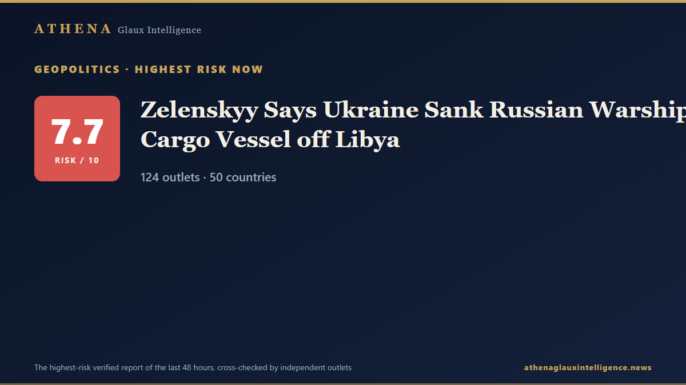
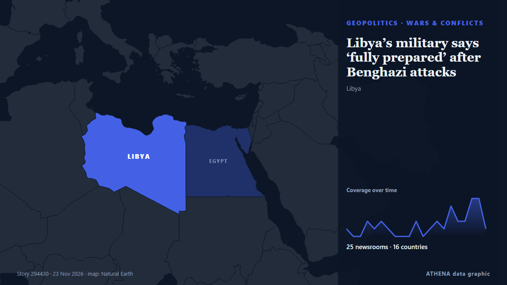

Risque 7.7Élevé
ATHENA Glaux Intelligence — Veille mondiale de l'information — chaque chiffre expliqué
Géopolitique
Toute la géopolitique >Risque le plus élevé maintenant

Risque en hausseHausse au cours des dernières 24 heures
- Lebanese prime minister accuses Israeli army of exploiting schoolchildren to ‘whitewash’ occupationRisque 0.0 → 4.2
- Hyderabad on high alert after email threatens 26/11-style terror attacksRisque 3.0 → 6.6
- U.S. Forces Korea deploys Apache, Blackhawk helicopters for live-fire drills in JapanRisque 2.4 → 6.1
Maritime et transport
Bureau maritime >Risque le plus élevé maintenant
Risque 7.6Élevé
Endurance athlete swims in Strait of Hormuz to highlight Iran war's impact on wildlife
Voir les preuves ›
Liste de surveillanceDétroits, ports et autres reportages maritimes
- Strait of HormuzPerturbéattack / strike · risk 7.6 · 22 newsrooms (72 h)
- Bab el-Mandeb / Red SeaPerturbéattack / strike · risk 7.7 · 125 newsrooms (72 h)
- Danish Straits / BalticPerturbéattack / strike · risk 7.7 · 125 newsrooms (72 h)
Chaque titre, vérifié dans plusieurs pays.
ATHENA Glaux suit 632 médias dans le monde. Une information devient un événement vérifié seulement lorsque des médias indépendants la rapportent. Chaque événement indique qui l'a publiée en premier et un score de risque avec ses raisons.
1 336événements en 24 h
632médias suivis
38minutes entre deux mises à jour
Séisme ou inondation près de chez vous cette semaine ?
Saisissez votre ville et voyez les séismes, inondations, tempêtes et alertes officielles à proximité, avec une liste du kit d'urgence 72 heures. Gratuit, sans inscription, et votre lieu reste sur votre appareil.
Des articles arrivent de médias indépendants : quand deux se rejoignent sur la même histoire, un événement vérifié naît.
Comment ATHENA vérifie une information
- CollecterLes reportages arrivent de médias indépendants dans de nombreux pays.
- CroiserQuand deux médias se rejoignent sur la même information, elle devient un événement vérifié.
- ExpliquerChaque événement montre qui était le premier, jusqu'où il s'est propagé et pourquoi le risque est ce qu'il est.
Perspectives mondiales des risques
Bilans hebdomadaires et mensuels : les événements les plus à risque, les tendances par domaine et par région, et ce qu'il faut surveiller.
Lire les perspectives ›Briefing quotidien
Les dix événements mondiaux les plus importants du jour, les risques en hausse et les nouveaux événements, chaque chiffre expliqué.
Ouvrir le briefing du jour ›
GéopolitiqueLibya’s military says ‘fully prepared’ after Benghazi attacks
Libyan military says Benghazi port is ‘under control’ and it is ‘fully prepared’ to respond to threats. de Al Jazeera English
6.3Importance
5.5Risque · accru
89%Confiance
Les titres sont affichés en anglais, tels que publiés.
Géopolitique
Lee names new FM, 3 other ministers, spy chief
SEOUL, Nov. 23 (Yonhap) -- President Lee Jae Myung on Monday named a presidentia... de Yonhap (English)
Économie et marchés
Israeli attacks on medics in occupied West Bank surge by 350%: Rights group
Physicians for Human Rights Israel says medics face 'dangerous escalation' in violence from soldiers and settlers. de Al Jazeera English
Sponsorisé
Cybernetics and Artificial Intelligence Lab Welcome to the Cybernetics and Artificial Intelligence Laboratory, established at the Department of Business Administration of the National and Kapodistrian University of Athens. The lab is headed by Professor Dimitrios Thomakos. The lab aims to do research that can be published in top venues. Our research uses tools and methods of Artificial Intelligence, and lies in the following areas: - Forecasting - Decision making - Cyber security - Finance We are always looking forward to collaborating with exceptional students!
En savoir plus – Cybernetics and Artificial Intelligence LabNavires dans les détroits du monde en ce moment
Comptages AIS en direct. Touchez ou survolez une barre pour le détail.
Derniers reportages
Cold weather threatens Europe's already strained gas reserves
Iran not to retreat its conditions under pressure, threats
Drone Strikes Hit Homes, UN Building In Sudan’s Capital
Britain digging new reservoirs to fight persistent droughts
A Draft of Armenia’s New Constitution Has Been Presented — Pashinyan to Deliver an Address
Indonesia president to nominate VP candidates on Monday, state media reports
China’s military fears US AI could expose its nuclear missiles, NYT reports
‘No use pretending otherwise’: Chalmers warns of tough year ahead as jobless and inflation forecasts worsen
Énergie et environnement
COP31 fails to agree on climate deal
Civil society groups from Bangladesh, Bhutan and Nepal call for predictable, grant-based adaptation funding. de The Business Standard (Bangladesh) (working feed)
Énergie et environnement
Bad COP, worse COP: What’s next after climate talks fail?
The collapse of marathon climate talks in Turkey has renewed questions about reform of their consensus requirement, and galvanised calls for legal action and ambitious side agreements between… de Al-Monitor
Géopolitique
US Intelligence Chief Says Putin Is 'Not America's Friend In Ukraine'
Trump’s description of Putin as a friend during the APEC summit drew criticism from European allies of Ukraine. de The Straits Times
Géopolitique, politique et sécurité
Plus ›Guerres et conflits
Russian Corvette Merkury Reportedly Destroyed in Explosion at Libya’s Benghazi Port
A Russian Steregushchiy-class corvette, believed to be the Merkury, was engulfed in flames after a pre-dawn explosion at Benghazi's naval base. de Greek City Times
- Guerres et conflits
Boy, 7, pulled alive from rubble hours after Russian strike on Ukraine, rescuers say
- Diplomatie et sommets
Nepal PM India visit LIVE: PM praises Balen Shah's ‘far-sighted vision’, announces package worth ₹15,000 crore
- Diplomatie et sommets
Ireland hit with more bomb threats as security preparations ramp up for EU summit
- Diplomatie et sommets
Marcos pushes back on Trump’s claim of exclusive US food buys
Économie, finance et marchés
Plus ›Inflation et taux d'intérêt
Shoppers rush to buy gold
Sharp price drop drives demand for jewellery and gold bars. de News of Bahrain
- Inflation et taux d'intérêt
Japanese Yen strengths as inflation data reaffirms BoJ rate hike bets
- Inflation et taux d'intérêt
South African rand gains as commodity prices rise and dollar weakens
- Banques centrales et régulation
Kipit Asset Management Appoints Mr. Luke Ofojebe, CFA, as Acting Managing Director
- Banques et crédit
Trump: Illegal for Deutsche Bank to leak tax records
Commerce, industrie et infrastructures
Plus ›Transport maritime et ports
US ports face surge in cyberattack attempts, threatening vital trade routes: Report
Port of Los Angeles recorded 120 million attempted cyberattacks in August, while major US crude oil export hub faces thousands of daily threats, Financial Times reports. de Anadolu Agency (English)
- Commerce et accords
124 Italian-invested companies operate in Azerbaijan, deputy minister says
- Infrastructures critiques
US special envoy says Syria now open to ‘real deals,’ welcomes Chevron energy talks
- Industrie manufacturière
Tata Steel to acquire 26.6% stake in APL Apollo for ₹15,510 crore
- Transport maritime et ports
Ford ships first battery cells from its Michigan Blue Oval plant
Énergie, ressources et environnement
Plus ›Climat et politique climatique
COP31 fails to reach consensus on Antalya Pact
The United Nations Secretary-General António Guterres said that he was ‘deeply disappointed that COP31 has ended without consensus on an overarching outcome’ on Sunday (22 November). de Ship.Energy
- Renouvelables et stockage
HMM signs green shipping deal with Nextpower
- Climat et politique climatique
Climate talks collapse in chaotic end to COP31
- Météo extrême et catastrophes
As headlines fade, Nepal’s flood survivors are still rebuilding
- Climat et politique climatique
PM Wong to visit Australia from Nov. 23-25, meet Australian PM Albanese
Technologie, IA et cybersécurité
Plus ›Intelligence artificielle
Meta AI chief warns: Superintelligence is coming, danger depends on humans
Alexandr Wang has underscored a pivotal year for humanity as we navigate the realms of superintelligence and artificial intelligence. de Times of India
- Médias et désinformation
TikTok launches tool to help public figures detect deepfakes globally
- Espace et satellites
Nepal and India sign eight MoUs on cooperation in multiple sectors
- Logiciels et cloud
Troubled data centre firm lands major face time atop Tower of Power
- Robotique et automatisation
Italy Gives Tesla Green Light for Assisted Driving
Entreprises et investissement
Plus ›Stratégie d'entreprise
Russia's Wildberries CEO Steps Down Days After EU Sanctions, Media Report
Nov 21 - Tatyana Kim, the head of Russia's largest online retailer Wildberries, has stepped down, Russian media reported on Saturday, days after the European Union added her to its Russia sanctions… de The Straits Times
- Fusions et acquisitions
Eni's Vår Energi to acquire ConocoPhillips' assets in Norway and UK for $2.5 bn
- Secteurs et risques
Honda, Toyota recall 1.6 million vehicles over Takata airbag rupture risk
- Résultats et perspectives
Uzbekistan rises 31 places in UN E-Government Development Index
- Stratégie d'entreprise
Schettino out of jail after getting time off term for good behaviour
Accidents et urgences
Plus ›Accidents et urgences
Bangladesh vows to arrest Hasina if she returns from India
Government minister says India should honour extradition treaty, return former prime minister as convict. de Express Tribune
Trois façons de lire aujourd'hui
Commencez par celle qui convient à votre tempsÉvénements vérifiés
Classés selon l'ampleur de la couverture
- Netanyahu and Eisenkot parties resume talks to form Israel government160 médias · 56 paysRisque 4.7
- Alice Huang in touch with Chinese spy agency during affair with Nvidia CEO, NYT says148 médias · 49 paysRisque 4.4
- Child rescued in Ukraine after Russian drone attack kills 10106 médias · 43 paysRisque 6.8
- COP31 climate talks collapse as EU and others reject deal74 médias · 40 paysRisque 2.2
- Indonesia searches for 34 missing workers after candy factory fire53 médias · 31 paysRisque 6.9
Bureau d'évaluation
Posez une question et lisez une évaluation argumentée d'un sujet majeur, avec ce qui la démentirait.
Ouvrir le Bureau d'évaluation ›Aujourd'hui en chiffres
| 13:00 | 478 |
|---|---|
| 14:00 | 7 |
| 15:00 | 307 |
| 16:00 | 46 |
| 17:00 | 0 |
| 18:00 | 920 |
| 19:00 | 920 |
| 20:00 | 378 |
| 21:00 | 243 |
| 22:00 | 154 |
| 23:00 | 255 |
| 00:00 | 236 |
| 01:00 | 313 |
| 02:00 | 284 |
| 03:00 | 285 |
| 04:00 | 471 |
| 05:00 | 548 |
| 06:00 | 512 |
| 07:00 | 478 |
| 08:00 | 673 |
| 09:00 | 828 |
| 10:00 | 416 |
| 11:00 | 117 |
| 12:00 | 494 |
Risque des événements du jour
Géopolitique91Économie et marchés42Énergie et environnement35Commerce et industrie33Entreprises33Technologie et cyber29Maritime3
Signaux émergents
- Hausse soudaine · ActifBenghazi
- Hausse soudaine · ActifKhartoum
- Hausse soudaine · ActifEsmaeil Baghaei
- Hausse soudaine · ActifDymer
- Hausse soudaine · ActifClayton
Alertes officielles
- M 6.5 - Vanuatu regionM6.5 · USGS ·
- M 5.9 - 238 km SW of Yanglong, ChinaM5.9 · PAGER yellow · USGS ·
- Orange notification for tropical cyclone AKVAN-26. Population affected by Category 1 (120 km/h) wind speeds or higher is 0 (20.826 million in Tropical Storm).Orange · GDACS ·
Restez informé
ATHENA Weekly Risk Picture
Les plus grands risques géopolitiques, économiques et maritimes de la semaine, recoupés et notés.
Chaque vendredi à 8 h (heure d'Athènes) · gratuit · en anglais
S'abonner gratuitementATHENA sur Telegram
Les nouvelles dès leur publication : les événements urgents de risque 6 ou plus, un récapitulatif horaire, les mises à jour des suivis de risque et le briefing quotidien à 10 h.
Gratuit · publications en anglais · désinscription à tout moment
Rejoindre le canalL'inscription est gérée par beehiiv avec double confirmation : rien de ce que vous saisissez n'est envoyé à ATHENA, et chaque numéro contient un lien de désinscription.
Suivi des risques
Plus ›Détroit d'OrmuzRisque 7.69 nouveaux événements cette semaine · en baisse (39 la semaine précédente)Mer RougeRisque 6.932 nouveaux événements cette semaine · en baisse (45 la semaine précédente)Grèce et TurquieRisque 3.55 nouveaux événements cette semaine · en baisse (10 la semaine précédente)ChypreRisque 5.014 nouveaux événements cette semaine · en baisse (18 la semaine précédente)Sanctions contre la RussieRisque 3.311 nouveaux événements cette semaine · en baisse (16 la semaine précédente)Guerre en UkraineRisque 7.7221 nouveaux événements cette semaine · en baisse (285 la semaine précédente)Proche-Orient : Israël et GazaRisque 6.769 nouveaux événements cette semaine · en baisse (87 la semaine précédente)TaïwanRisque 1.510 nouveaux événements cette semaine · en baisse (18 la semaine précédente)Pétrole et gazRisque 3.927 nouveaux événements cette semaine · en baisse (55 la semaine précédente)Canal de SuezRisque 0.01 nouvel événement cette semaine · en baisse (2 la semaine précédente)Détroits turcsRisque 0.00 nouvel événement cette semaineCanal de PanamaRisque 0.00 nouvel événement cette semaineFlotte fantômeRisque 0.01 nouvel événement cette semaine · en baisse (4 la semaine précédente)Navigation en mer NoireRisque 0.02 nouveaux événements cette semaine · en baisse (9 la semaine précédente)Banques centrales et tauxRisque 4.145 nouveaux événements cette semaine · stable par rapport à la semaine précédenteÉconomie grecqueRisque 2.88 nouveaux événements cette semaine · stable par rapport à la semaine précédenteÉnergie en Méditerranée orientaleRisque 0.01 nouvel événement cette semaine · en baisse (6 la semaine précédente)BalkansRisque 3.016 nouveaux événements cette semaine · en baisse (22 la semaine précédente)Migration en MéditerranéeRisque 0.01 nouvel événement cette semaine · en baisse (4 la semaine précédente)
Risques mondiaux — semaine 48, 2026 (23–29 nov.) ›
Dans le monde
EuropeIreland hit with more bomb threats as security preparations ramp up for EU summit
56 événements
Asie du Sud-EstVietnam Embassy celebrates Vietnamese Culture Day in Phnom Penh
55 événements
Moyen-Orient et Afrique du NordYemen's Houthis claim attacks on Saudi oil refinery as Trump warns of new strikes next year
55 événements
Amérique du NordWaymo recalls robotaxis after they drove into closed freeway lanes
53 événements
Asie du SudIndonesia searches for 34 missing workers after candy factory fire
49 événements
Afrique subsaharienneZelenskyy Says Ukraine Sank Russian Warship, Cargo Vessel off Libya
46 événements
Asie de l'EstLee names new FM, 3 other ministers, spy chief
41 événements
Russie et EurasieChild rescued in Ukraine after Russian drone attack kills 10
39 événements
OcéaniePM Wong to visit Australia from Nov. 23-25, meet Australian PM Albanese
32 événements
Amérique latine et CaraïbesCOP31 climate talks collapse as EU and others reject deal
23 événements